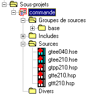

Un sous-projet est un élément du projet. Il contient les éléments suivants :
des paramètres généraux,
une liste de Groupes de sources,
une liste de fichiers sources,
une liste de fichiers Divers.
Sous-projet courant
Pour compiler un sous-projet par ou F10, ou pour naviguer dans les sources, vous devez préalablement sélectionner le sous-projet courant. Pour cela, cliquez avec le bouton droit sur le sous-projet et sélectionnez le choix "Définir comme sous-projet courant". Le sous-projet courant apparaît en rouge.

Principales actions réalisables au niveau du sous-projet
Au niveau d'un sous-projet il est possible :
d'ajouter / supprimer des sources
d'ajouter / supprimer des fichiers divers
de modifier des groupes de sources
de naviguer dans tous les sources du sous-projet (rechercher toutes les occurrences d'une donnée dans le sous-projet)
de rechercher un fichier dans le projet
de construire le sous-projet (compiler les sources qui doivent l'être F10 ou )
de reconstruire le projet (compiler tous les sources).
Voir également :
Pour créer / modifier / supprimer / renommer un groupe de sources